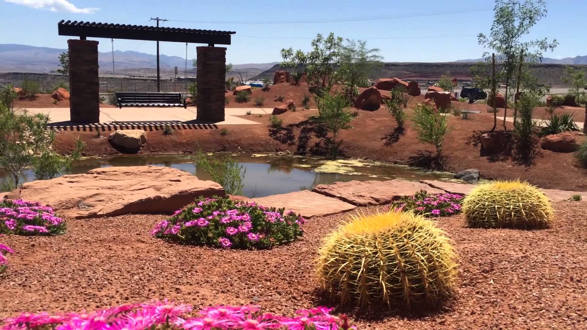

How to Choose Drought Resistant Plants
 Unlike annuals, perennials survive in the desert throughout the year. Some develop root systems that penetrate to great depths in order to tap into subterranean water. Yucca has been measured to reach 40 feet below the surface, while mesquite (Prosopis) roots can reach 100 feet in depth. Cacti spread a network of shallow roots, making a circular catch-basin, that can take advantage of even scanty amounts of precipitation. The open nature of deserts with widely-spaced shrubs reflects the low quantity of available moisture and suggests a pattern of extensive underground roots. Some perennials grow in the desert only in those habitats where water is available throughout the year, such as desert oases resulting from seeps, springs, or creeks.Hanging gardens are odd verdant anomalies perched among the otherwise dry, and nearly barren, sheer-walled canyons of southern Utah.